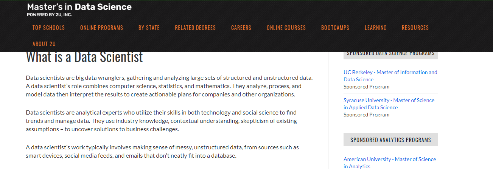

Data Scientist
In this video, data scientist Karthik Rajagopalan introduces the overall responsibilities of data scientist, his background, requirements of data scientist and several recommendations as a data scientist. He illustrates that data scientists usually get and shape data considering different approaches and solve problems using analyzed results. He has a degree in mechanical and PhD in physics. He thinks that imagination and math skills are required for data scientists to analyze data. He advises applicants who want to become a data scientist that reading books may be helpful to follow the technology market and learn novel technology and tools.

This website shows the overall path to become a data scientist, duties for a data scientist, a suitable personality as a data scientist and several data science programmes. They illustrate that it is recommended to get an undergraduate degree related to data science and study required skills such as programming skills and statistics. They also said that the responsibilities of data scientists might include analyzing unstructured and sophisticated data, researching novel algorithms and database management. Fastidiousness and creativity will probably be considered proper characteristics for data scientists as they will not only review a lot of data and figure out the pattern but also build new algorithms to organize database efficiency.
Description
.png)
Data scientists usually collect and analyze data and interpret them in order to contribute to determining better choices for an organization. They examine every data like customer behaviours and website visits in a complex system of an enterprise. They also invent algorithms to explain and even predict user’s behaviours. They frequently spend their time managing data. They track data from a variety of viewpoints, classify whether the information is valuable or should be discarded because of irrelevant data. In this process, they also discover weaknesses and make algorithms to improve them.
.png)
Since the retail and e-commerce areas tend to focus on customizing each customer's environment, data scientists work in various fields. Some startups are likely to only hire one data scientist, but mostly they work with their colleague, especially with data engineers because it contributes to boosting team productivity as well as performance. The considerable difficulties for data scientists communicate with non-technical stakeholders. As data analysis is one of the professional areas, it might be difficult to explain a technical concept. Thus, it is necessary to find effective solutions to improve interacting between data scientists and collaborators.